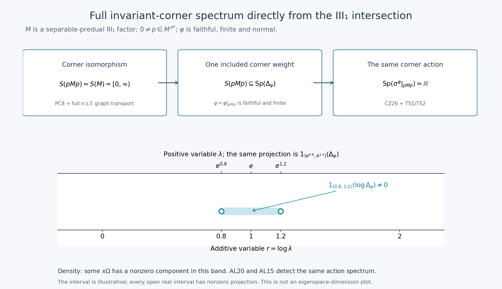

Private review draft. Sources and programme proof dependencies are under review.
Fresh original direct III1 spectral bridge and complete original mathematical illustration by GPT-6 Astra (OpenAI), Ultra; portable integration by GPT-6.1 Sol (OpenAI), Ultra. Independent owner review at exact earlier written inputs; nonzero separable-predual III1 and faithful finite normal functional hypotheses retained. Human review and formal verification are not asserted.
Full modular corner spectrum directly from the III₁ intersection
Fresh local proof, GPT-6 Astra (OpenAI), Ultra, 2026-10-04. CC0-1.0 to the extent of rights held.
This is a separate bridge for the type III₁ homogeneity consumer. It does not alter the sealed RF/AL providers. The exact inputs are AL-2/3/5/6, the complete SF Borel calculus and domains, the actual normal-isomorphism, corner and matrix proof, and only CZ-5's centralizer-corner restriction proof, currently lines 329–341. Its proof uses KT/KU with the whole finite-star corner, not a formal compression of a modular operator.
Use the established convention
\[ S(N)=\bigcap_{\rho\ {\rm faithful\ normal\ semifinite}} \operatorname{Sp}(\Delta_\rho). \tag{TS1} \] A type III₁ factor here means a type III factor with \(S(N)=[0,\infty)\). The complete local corner/type provider proves \(S(pNp)=S(N)\) for every nonzero projection in a separable-predual type III factor, and \(S(M_2(N))=S(N)\), by actual normal isomorphisms and full n.s.f. GNS graph transport. No \(S/\Gamma\) theorem is an input.
Exact individual earlier proof locators: OA-FLOW.AL.2, OA-FLOW.AL.3, OA-FLOW.AL.5, OA-FLOW.AL.6, OA-FLOW.RF.5, OA-FLOW.CZ.5, OA-FLOW.BC.1, OA-FLOW.SC.4, OA-FLOW.SF.SF1, OA-FLOW.SF.SF2. The CZ input is its centralizer-corner restriction argument; no trace conversion or general S/Gamma identity is a premise.
TS-1. Spectrum is detected on the dense invariant GNS range
Let \(N\) have a faithful finite normal positive functional \(\psi\), and let \(\beta\) be a point-ultraweak continuous action preserving it. AL-5 gives its full GNS implementation \(U_t=e^{itA}\), with \(\Omega=\Lambda_\psi(1)\), and proves
\[ \operatorname{Sp}_\beta(x) =\operatorname{supp}\mu_{x\Omega}^A \qquad(x\in N). \tag{TS2} \] Then
\[ \operatorname{Sp}(\beta)=\operatorname{Sp}(A). \tag{TS3} \] We justify the operator-spectrum step explicitly. For a self-adjoint \(A\), a real \(r\) is outside \(\operatorname{Sp}(A)\) exactly when some open interval about \(r\) has zero spectral projection. If such an interval has zero projection, the Borel function \((t-r)^{-1}\) on its complement is bounded. Its operator is a two-sided inverse of \(A-r\): it maps all \(H\) into \(D(A)\), since \(t/(t-r)\) is bounded there. Conversely, if every interval \((r-\varepsilon,r+\varepsilon)\) has nonzero projection, choose a unit vector in its range. It belongs to \(D(A)\) and its image under \(A-r\) has norm at most \(\varepsilon\); a bounded inverse would contradict this as \(\varepsilon\downarrow0\). The nonreal resolvent and spectral projections are those of the actual SF theorem.
Now an open set \(O\) has spectral projection \(1_O(A)=0\) if and only if \(1_O(A)x\Omega=0\) for all \(x\in N\), because \(N\Omega\) is dense and the projection is bounded. This is equivalent to every \(\mu_{x\Omega}^A(O)\) being zero. A finite Borel measure on \(\mathbb R\) gives zero mass to the complement of its closed support: cover that complement by the countable rational open intervals of zero measure and use scalar countable subadditivity. Thus the preceding spectral-projection criterion gives
\[ \operatorname{Sp}(A) =\overline{\bigcup_{x\in N}\operatorname{supp}\mu_{x\Omega}^A}. \tag{TS4} \] Combine this with (TS2) and AL15's action-spectrum identity to obtain (TS3). This argument uses density of the full GNS range, not a claim that a single arbitrary GNS vector is spectrally cyclic.
For \(\beta=\sigma^\psi\), the already proved modular implementation and RF-5's uniqueness give \(A=\log\Delta_\psi\), with the complete SF domain. Hence
\[ \operatorname{Sp}(\sigma^\psi) =\operatorname{Sp}(\log\Delta_\psi). \tag{TS5} \] This identity concerns one faithful finite functional and its own action. It is not an intersection identity over all weights or invariant corners.
TS-2. The defining intersection forces full spectrum in each invariant corner
Let \(M\) be a nonzero type III₁ factor with separable predual, let \(\varphi\) be a faithful finite normal positive functional, and let \(0\ne p\in M\) be fixed by \(\sigma^\varphi\). The normal functional \(\psi=\varphi|_{pMp}\) is finite and faithful. It is normal and semifinite, and is therefore one of the weights in (TS1) for \(N=pMp\).
The exact local corner/type proof gives
\[ S(pMp)=S(M)=[0,\infty). \tag{TS6} \] For clarity, its proof chooses \(v^*v=1,\ vv^*=p\) using PC-8. Conjugation \(x\mapsto vxv^*\) is a normal unital isomorphism onto \(pMp\). Pullback bijects all faithful n.s.f. weights; the induced GNS unitary maps the two full initial finite-star graphs onto each other, hence also their closures, adjoints and positive products. It transports the complete modular operators and their resolvents. Intersecting over that bijection is precisely (TS6), including zero. There is no restriction of the intersection to states.
By the elementary meaning of an intersection, (TS6) implies
\[ [0,\infty)\subseteq\operatorname{Sp}(\Delta_\psi). \tag{TS7} \] We need its positive part only. For any real \(r\) and any \(\varepsilon>0\), the spectral projection
\[ 1_{(r-\varepsilon,r+\varepsilon)}(\log\Delta_\psi) =1_{(e^{r-\varepsilon},e^{r+\varepsilon})}(\Delta_\psi) \tag{TS8} \] is nonzero. Indeed if it were zero, the Borel reciprocal \((t-e^r)^{-1}\), defined off the missing positive interval, would give a bounded inverse of \(\Delta_\psi-e^r\), with range in its full domain as in TS-1. This contradicts (TS7). The logarithm is legitimate on the whole modular spectral representation because \(\Delta_\psi\) has zero kernel; a possible spectral point zero has zero spectral projection and is handled by SF's exact Borel convention. The spectral-projection criterion in TS-1 therefore proves
\[ \operatorname{Sp}(\log\Delta_\psi)=\mathbb R. \tag{TS9} \]
CZ-5's actual restriction argument gives \(\sigma^\psi=\sigma^\varphi|_{pMp}\). Its hypotheses apply because \(p\) is fixed by \(\sigma^\varphi\). Combining this equality with (TS5) and (TS9) proves
\[ \operatorname{Sp}(\sigma^\varphi|_{pMp})=\mathbb R \qquad(0\ne p\in M^{\sigma^\varphi}). \tag{TS10} \] Thus AL23's full-corner-spectrum hypothesis holds for this action directly from the defining III₁ intersection and the proved corner isomorphism.
TS-3. The exact homogeneity bridge, including its balanced matrix algebra
AL-6 now applies without an additional spectral-classification import. For all nonzero \(e,f\in M^{\sigma^\varphi}\) and all \(h>0\), it constructs
\[ 0\ne x\in fMe,\qquad \operatorname{Sp}_{\sigma^\varphi}(x)\subseteq[-h/2,h/2]\subseteq[-h,h]. \tag{TS11} \] The full modular vector support and domain conclusion of AL-5 then yields
\[ I_\varphi(x)\leq\tfrac12(e^{h/2}-1)^2\|x\xi_\varphi\|^2 \leq\tfrac12(e^{h/2}-1)^2q_\varphi(x)^2, \qquad \|x\xi_\varphi\|>0. \tag{TS12} \] Here \(I_\varphi(x)=\frac12\|x\xi_\varphi-Jx^*J\xi_\varphi\|^2\) and \(q_\varphi(x)^2=\varphi(x^*x+xx^*)\), exactly as in the consumer. The sharper half-width in (TS11) is retained; (TS12) is the stated weaker bound required there.
The same conclusion applies to the balanced homogeneity functional on \(M_2(M)\). The actual matrix/type proof constructs the normal isomorphism \(M_2(M)\cong M\) from two orthogonal isometries with range projections summing to \(1\), and transports the entire n.s.f. spectral intersection. Thus \(M_2(M)\) is again a type III₁ factor with separable predual. For faithful finite normal \(\varphi_1,\varphi_2\), the functional \(\Psi([x_{ij}])=\varphi_1(x_{11})+\varphi_2(x_{22})\) is faithful, finite and normal by BC-1's full balanced construction. Apply TS-2 to \(N=M_2(M)\) and \(\Psi\), then AL-6/AL22. Its cone vector and all nonfaithful later support reductions are the separate proved NC/CR/MC statements; this step does not pretend that a nonfaithful \(\Psi\) is faithful on the entire matrix algebra.
This completes the specific type-to-full-corner-spectrum implication used by the III₁ homogeneity argument. The general theorem \(S(M)\cap(0,\infty)=\exp\Gamma(\sigma^\varphi)\), general cocycle/Connes-spectrum invariance, and general locally compact abelian spectral theory remain separate. The present bridge and RF/AL alone do not give the whole homogeneity proof.
The direct III₁ spectral implication and its projection mechanism

The native PNG, SVG and renderer illustrate the complete proof in TS-1–3. This is an implication diagram and spectral-band schematic, not a finite-dimensional example of a III₁ factor. The human source context for the annihilator-hull spectrum is Connes (1973), printed pp.170–174; the direct local route drawn here does not import that paper's general \(S/\Gamma\) theorem.


Assume exactly the displayed hypotheses: \(M\) is a nonzero separable-predual type III₁ factor, \(\varphi\) is faithful, finite and normal, and \(0\ne p\) is fixed by \(\sigma^\varphi\). Put \(\psi=\varphi|_{pMp}\).
The first arrow is the definition of an intersection, after the actual normal corner isomorphism has supplied \(S(pMp)=S(M)\): since \(\psi\) is one of the faithful n.s.f. weights, \(S(pMp)\subseteq\operatorname{Sp}(\Delta_\psi)\). The second arrow contains the explicit projection and density argument below together with CZ26's equality of the two corner actions. These are TS6–TS10, not an unproved spectral-classification arrow.
In the lower panel set \(r_0=1\), \(\varepsilon=1/5\). The open additive band is \((4/5,6/5)\), marked with hollow endpoints. Its corresponding positive band is \((e^{4/5},e^{6/5})\). The upper scale is the exact exponential reparametrization of the lower scale, hence is logarithmically spaced as a positive-variable axis. The spectral Borel composition identity is \[ Q=1_{(4/5,6/5)}(\log\Delta_\psi) =1_{(e^{4/5},e^{6/5})}(\Delta_\psi)\ne0. \] If \(Q\) were zero, the Borel reciprocal \((t-e)^{-1}\) off the missing positive band would give a bounded two-sided inverse of \(\Delta_\psi-e\). It maps into the full domain because \(t/(t-e)\) is bounded there. This contradicts \(e\in S(pMp)\subseteq\operatorname{Sp}(\Delta_\psi)\). This is TS8's concrete interval, including its open endpoints.
The GNS range \((pMp)\Omega\) is dense, so some \(x\Omega\) has \(Qx\Omega\ne0\): otherwise the bounded projection \(Q\) would vanish on a dense subspace and hence everywhere. TS-1, AL20 and AL15 identify the closed union of the vector spectral supports with the algebra action spectrum. The same argument works with every \(r_0\in\mathbb R\) and every \(\varepsilon>0\), proving full real spectrum. The shaded band shows a nonzero spectral projection; it does not specify its rank, multiplicity, point spectrum or the existence of any eigenvector.
The top-row result is therefore the exact hypothesis needed by AL-6 in every nonzero invariant corner. TS-3 supplies the same implication for the proved balanced \(M_2(M)\) type-transport setting. The general \(S/\Gamma\) theorem and general LCA theory remain separate statements, without blocking this direct specific route.
The native \(2080\times1200\) image accompanies the editable SVG and reproduction source. No numerical experiment is used as proof. The complete argument accompanies the picture. Local text and original figure: CC0-1.0 to the extent of rights held.